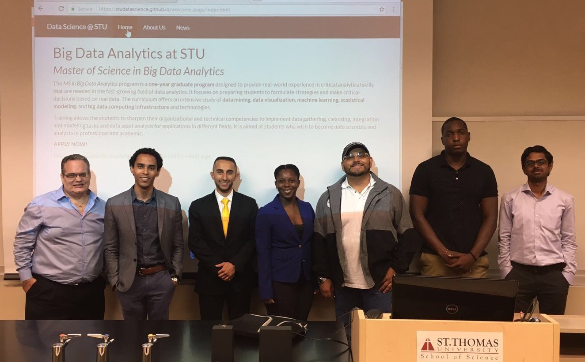
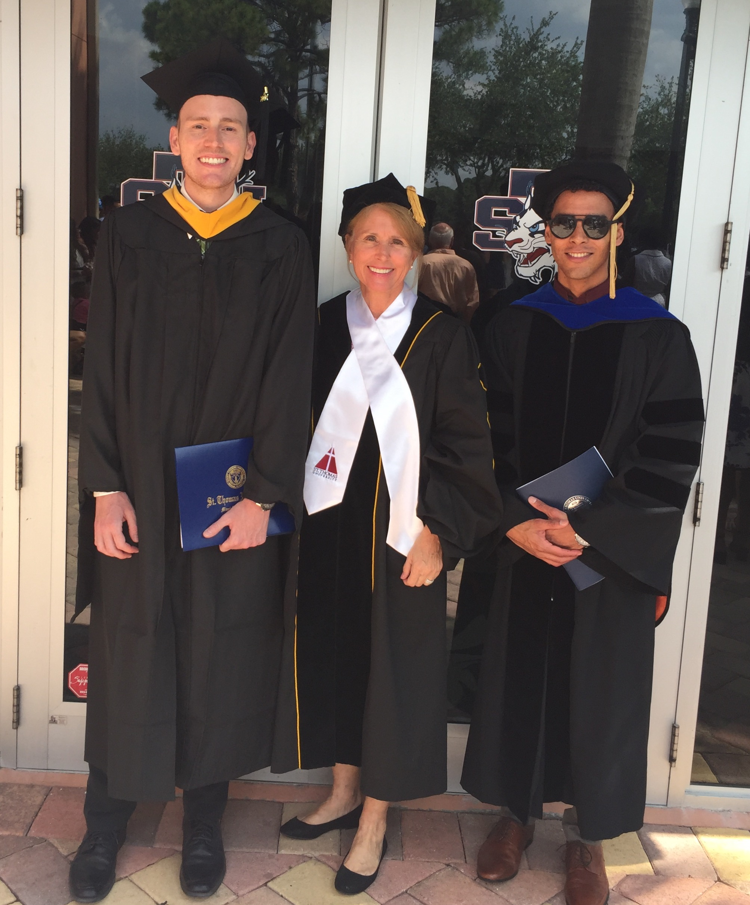
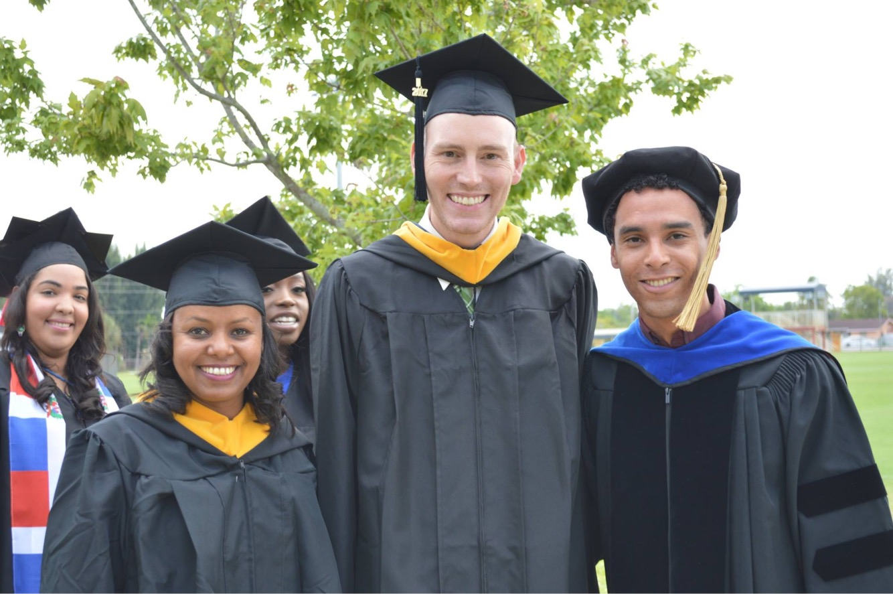
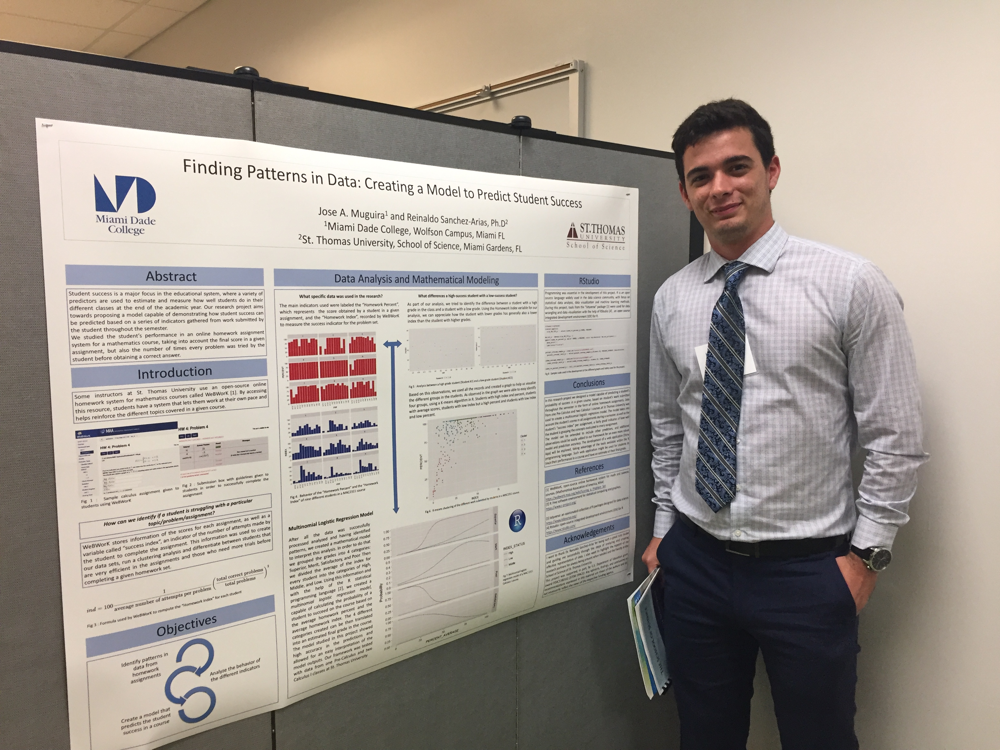
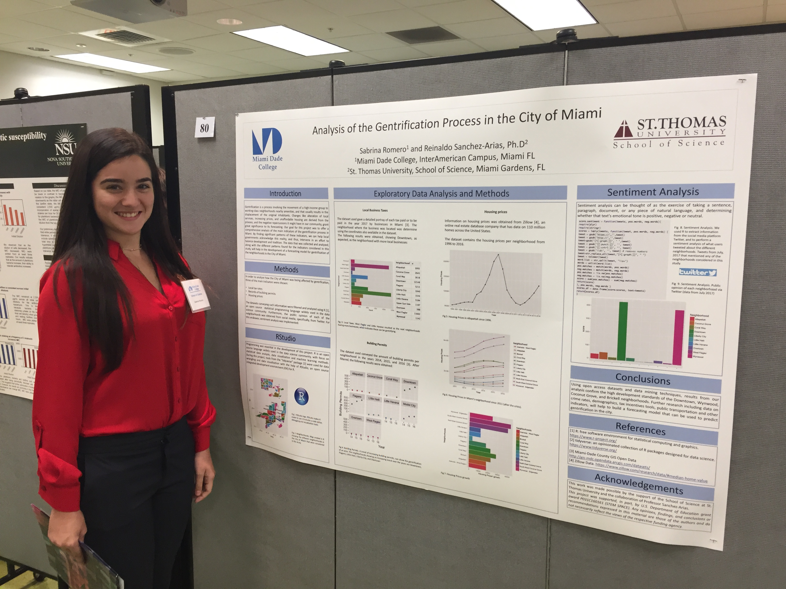

Miami Dade College (MDC) and St Thomas University (STU) students participating on the Summer Research Institute (SRI) 2017 continue to learn about data science and are using R for cool undergraduate projects.
CIS 204 Intro to Data Sience to be offered during the Fall of 2017. Enroll now!
Instructor: Reinaldo Sanchez-Arias, PhD
Meetings: MW 1:40 - 2:55 PM CCL 101

Biology students Claudia Gorbea and Amanda Lobato, who worked with Dr. Pilar Maul and Dr. Sanchez-Arias as well as faculty from Nova Oceanographic Center, will present their project “Analysis of Microbial Communities Reflect Vertical Migration in the Gulf of Mexico” at the 2017 American Society for Microbiology - Florida Branch Meeting in Clearwater Beach, FL. A variety of data analysis R tools were used during this project for data visualization!
Dr. Sanchez-Arias participated in the STU Biology Seminar Series, with a presentation on Big Data Analytics in Life Sciences. The seminar is organized by Dr. Jeff Plunkett, with participation of STU faculty, as well as of students in the MS in Cell and Molecular Biology
Dr. Sanchez-Arias was recently invited to participate in the FIU Biomedical Engineering Wallace H. Coulter Foundation Lecture Series, with a seminar talk on “Data Analytics and Machine Learning Applications for Engineering and Science”.
Dr. David Quesada participated in the Geological Society of America (GSA) Annual Meeting, presenting about his work on how to enhance climate literacy across liberal arts education through cross-curriculum embedding of topics. He presented a summary of 4 years of partnership with the American Meteorological Society and the GSA educational initiatives.